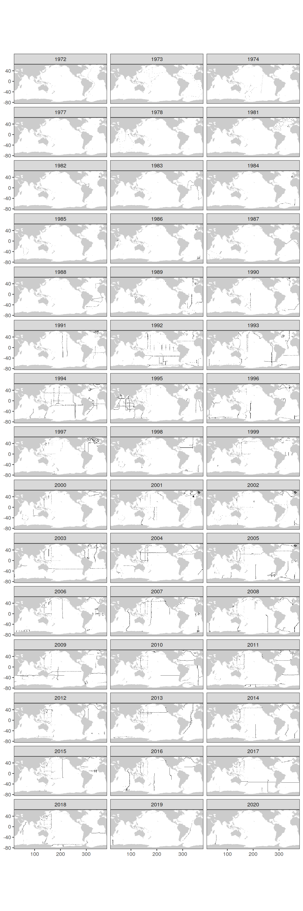

GLODAPv2_2020
Jens Daniel Müller
19 November, 2021
Last updated: 2021-11-19
Checks: 7 0
Knit directory: emlr_obs_preprocessing/
This reproducible R Markdown analysis was created with workflowr (version 1.6.2). The Checks tab describes the reproducibility checks that were applied when the results were created. The Past versions tab lists the development history.
Great! Since the R Markdown file has been committed to the Git repository, you know the exact version of the code that produced these results.
Great job! The global environment was empty. Objects defined in the global environment can affect the analysis in your R Markdown file in unknown ways. For reproduciblity it’s best to always run the code in an empty environment.
The command set.seed(20200707) was run prior to running the code in the R Markdown file. Setting a seed ensures that any results that rely on randomness, e.g. subsampling or permutations, are reproducible.
Great job! Recording the operating system, R version, and package versions is critical for reproducibility.
Nice! There were no cached chunks for this analysis, so you can be confident that you successfully produced the results during this run.
Great job! Using relative paths to the files within your workflowr project makes it easier to run your code on other machines.
Great! You are using Git for version control. Tracking code development and connecting the code version to the results is critical for reproducibility.
The results in this page were generated with repository version 46c1246. See the Past versions tab to see a history of the changes made to the R Markdown and HTML files.
Note that you need to be careful to ensure that all relevant files for the analysis have been committed to Git prior to generating the results (you can use wflow_publish or wflow_git_commit). workflowr only checks the R Markdown file, but you know if there are other scripts or data files that it depends on. Below is the status of the Git repository when the results were generated:
Ignored files:
Ignored: .Rhistory
Ignored: .Rproj.user/
Ignored: data/
Untracked files:
Untracked: code/read_GLODAPv2_2020.Rmd
Unstaged changes:
Modified: code/Workflowr_project_managment.R
Note that any generated files, e.g. HTML, png, CSS, etc., are not included in this status report because it is ok for generated content to have uncommitted changes.
These are the previous versions of the repository in which changes were made to the R Markdown (analysis/read_GLODAPv2_2021.Rmd) and HTML (docs/read_GLODAPv2_2021.html) files. If you’ve configured a remote Git repository (see ?wflow_git_remote), click on the hyperlinks in the table below to view the files as they were in that past version.
| File | Version | Author | Date | Message |
|---|---|---|---|---|
| Rmd | 46c1246 | jens-daniel-mueller | 2021-11-19 | rerun with GLODAP cast column |
| html | 375d7c7 | jens-daniel-mueller | 2021-11-18 | Build site. |
| Rmd | 1839007 | jens-daniel-mueller | 2021-11-18 | delta EW crossover values determined |
| html | f30883c | jens-daniel-mueller | 2021-11-18 | Build site. |
| Rmd | 7acd48c | jens-daniel-mueller | 2021-11-18 | delta crossover values determined |
| html | 2e6c3f1 | jens-daniel-mueller | 2021-11-18 | Build site. |
| Rmd | 49ca05c | jens-daniel-mueller | 2021-11-18 | delta crossover values determined |
| html | 16dab59 | jens-daniel-mueller | 2021-11-18 | Build site. |
| Rmd | 620b6f4 | jens-daniel-mueller | 2021-11-18 | delta crossover values determined |
| html | 42965b9 | jens-daniel-mueller | 2021-11-18 | Build site. |
| Rmd | 69dbb5f | jens-daniel-mueller | 2021-11-18 | crossing checks |
| html | c9363ce | jens-daniel-mueller | 2021-11-18 | Build site. |
| Rmd | 6bc79d6 | jens-daniel-mueller | 2021-11-18 | crossing checks |
| html | 0908ee5 | jens-daniel-mueller | 2021-11-15 | Build site. |
| html | 6d6a23e | jens-daniel-mueller | 2021-11-01 | Build site. |
| Rmd | 2f36786 | jens-daniel-mueller | 2021-11-01 | preprocess adjustment table, create new basinmaps |
| html | 2a50fa9 | jens-daniel-mueller | 2021-10-28 | Build site. |
| Rmd | 67de9ab | jens-daniel-mueller | 2021-10-28 | preprocess tracers |
| html | a96bf9e | jens-daniel-mueller | 2021-10-27 | Build site. |
| Rmd | d99b131 | jens-daniel-mueller | 2021-10-27 | added time series plots |
| html | fde6c32 | jens-daniel-mueller | 2021-10-27 | Build site. |
| Rmd | db93d9f | jens-daniel-mueller | 2021-10-27 | added time series plots |
| html | 7db7e6a | jens-daniel-mueller | 2021-10-27 | Build site. |
| Rmd | d6fb0dc | jens-daniel-mueller | 2021-10-27 | added time series plots |
| html | 68d67e7 | jens-daniel-mueller | 2021-10-27 | Build site. |
| Rmd | b4ea199 | jens-daniel-mueller | 2021-10-27 | added time series plots |
| html | 7987bb7 | jens-daniel-mueller | 2021-10-21 | Build site. |
| Rmd | b64c54d | jens-daniel-mueller | 2021-10-21 | added inventory layer depth |
| html | 8d1aaf8 | jens-daniel-mueller | 2021-10-20 | Build site. |
| Rmd | 5bce752 | jens-daniel-mueller | 2021-10-20 | corrected qc flag in glodap |
| html | dc8d958 | jens-daniel-mueller | 2021-10-20 | Build site. |
| Rmd | b2ccc04 | jens-daniel-mueller | 2021-10-20 | corrected qc flag in glodap |
| html | 2438c5a | jens-daniel-mueller | 2021-08-30 | Build site. |
| Rmd | 4296433 | jens-daniel-mueller | 2021-08-30 | rerun GLODAP preprocessing with officially released file |
| html | e49875a | jens-daniel-mueller | 2021-07-07 | Build site. |
| html | 6312bd4 | jens-daniel-mueller | 2021-07-07 | Build site. |
| Rmd | 4905409 | jens-daniel-mueller | 2021-07-07 | rerun with new setup_obs.Rmd file |
| html | 58bc706 | jens-daniel-mueller | 2021-07-06 | Build site. |
| Rmd | 0db89e1 | jens-daniel-mueller | 2021-07-06 | rerun with revised variable names |
| html | f600971 | jens-daniel-mueller | 2021-07-02 | Build site. |
| html | 98599d8 | jens-daniel-mueller | 2021-06-27 | Build site. |
| Rmd | 4f9c370 | jens-daniel-mueller | 2021-06-27 | update to latest GLODAP pre-release |
| html | 265c4ef | jens-daniel-mueller | 2021-06-04 | Build site. |
| html | c79346a | jens-daniel-mueller | 2021-06-03 | Build site. |
| html | 9d8353f | jens-daniel-mueller | 2021-05-31 | Build site. |
| Rmd | b948168 | jens-daniel-mueller | 2021-05-31 | ingest GLODAPv2_2021 beta data |
path_glodapv2_2021 <- "/nfs/kryo/work/updata/glodapv2_2021/"
path_preprocessing <- paste(path_root, "/observations/preprocessing/", sep = "")1 Read files
Main data source for this project is GLODAPv2.2021_Merged_Master_File.csv downloaded from https://www.ncei.noaa.gov/data/oceans/ncei/ocads/data/0237935/GLODAPv2.2021_Merged_Master_File.csv on Aug 30, 2021.
GLODAP <-
read_csv(
paste(
path_glodapv2_2021,
"GLODAPv2.2021_Merged_Master_File_20210830.csv",
sep = ""
),
na = "-9999",
col_types = cols(.default = col_double())
)
GLODAP <- GLODAP %>%
rename_with(~str_remove(., 'G2'))GLODAP_adjustments <-
read_csv(
paste(
path_glodapv2_2021,
"GLODAPv2.2021_adjustments_last_updated_on_2021_05_10.csv",
sep = ""
),
na = c("-666", "-777", "-888", "-999"),
skip = 2
)GLODAP_expocodes <-
read_tsv(
paste(
path_glodapv2_2021,
"EXPOCODES.txt",
sep = ""
),
col_names = c("cruise", "cruise_expocode")
)2 Data preparation
2.1 Correct qc flag
From an email conversation with Nico Lange
Yes, we are aware of these faulty(!) calculated TA data (using DIC and fCO2). It is linked to v2.2020 where we’ve added fCO2 to the “missing carbon calculation matrix”. Overall, including fCO2 in these calculations has worked great to fill some missing carbon gaps. However, for this cruise in particular the fCO2 values have most likely been converted wrongly to 20°C and are thus off! The problem of this all is that we haven’t really done a 2nd QC on the fCO2 values neither have we defined the corresponding “G2fCO2qc” variable, hence for the sake of consistency we kept all fCO2 values in. Again and unfortunately, in this particular case it led to the bad calculations of TA data…. We plan to do a full 2nd QC on all (!) fCO2 data for v3.
But you have indeed found a flaw in our merging script, as the corresponding calculated TA values should not have received a 2nd QC flag of 1! I missed out on adding a line to our merging script to accommodate for the non-existence of 2nd fCO2 flags in the carbon calculation matrix.
So long story short: Thank you very much for finding this flaw and letting me know of it!
and
Yes, the all calculated TA data from cruise 695 should have a talkqc of 0 (as they are based upon un QC’d fCO2 data…).
And no (thanks to your hint and questions), I figured that this wrongly assigned 2nd QC flag is a problem for all calculated carbon data, which used fCO2 for the calculations. However, luckily this is not really often the case.
You can check if thats the case by looking at which other carbon parameters are measured, i.e. by checking their primary flags (e.g. G2talkf, G2tco2f and G2phts25p0f and G2fco2f). If only two are measured and one of them is fCO2, it means that the other carbon parameters (the ones with a primary flag of 0) are calculated using fCO2. Hence, for these instances no 2nd QC is done and the corresponding qc flag should be 0 and not 1.
# calculate number of measured co2 system variables
GLODAP <- GLODAP %>%
mutate(measured_CO2_vars = rowSums(select(., c(
tco2f, talkf, fco2f, phts25p0f
)) == 2))
# identify cruises on which talk/tco2 was calculated
talk_qc_error_cruises <- GLODAP %>%
select(cruise, tco2:phtsqc, measured_CO2_vars) %>%
filter(measured_CO2_vars == 2,
fco2f == 2,
talkf == 0) %>%
distinct(cruise, talkf, talkqc, fco2f)
tco2_qc_error_cruises <- GLODAP %>%
select(cruise, tco2:phtsqc, measured_CO2_vars) %>%
filter(measured_CO2_vars == 2,
fco2f == 2,
tco2f == 0) %>%
distinct(cruise, tco2f, tco2qc, fco2f)
talk_qc_error_cruises %>%
write_csv("data/talk_qc_error_cruises_GLODAPv2_2021.csv")
tco2_qc_error_cruises %>%
write_csv("data/tco2_qc_error_cruises_GLODAPv2_2021.csv")
rm(talk_qc_error_cruises, tco2_qc_error_cruises)
# set qc = 0 for tco2 and talk values calculated from fco2
GLODAP <- GLODAP %>%
mutate(tco2qc = if_else(measured_CO2_vars == 2 &
fco2f == 2 & tco2f == 0,
0,
tco2qc))
GLODAP <- GLODAP %>%
mutate(talkqc = if_else(measured_CO2_vars == 2 &
fco2f == 2 & talkf == 0,
0,
talkqc))
GLODAP <- GLODAP %>%
select(-measured_CO2_vars)# calculate number of measured co2 system variables
GLODAP <- GLODAP %>%
mutate(measured_CO2_vars = rowSums(select(., c(
tco2f, talkf, fco2f, phts25p0f
)) == 2))
# identify cruises on which talk/tco2 was calculated
tco2_talk_calc <- GLODAP %>%
select(cruise, tco2:phtsqc, measured_CO2_vars) %>%
filter(measured_CO2_vars == 2,
fco2f == 2,
phts25p0f == 2)
GLODAP <- GLODAP %>%
select(-measured_CO2_vars)2.2 Harmonize nomenclature
# create date column
GLODAP <- GLODAP %>%
mutate(date = ymd(paste(year, month, day))) %>%
relocate(date)
# harmonize column names
GLODAP <- GLODAP %>%
rename(sal = salinity,
temp = temperature)
# harmonize coordinates
GLODAP <- GLODAP %>%
rename(lon = longitude,
lat = latitude) %>%
mutate(lon = if_else(lon < 20, lon + 360, lon))2.3 Horizontal gridding
For merging with other data sets, all observations were grouped into latitude intervals of:
- 1° x 1°
GLODAP <- m_grid_horizontal(GLODAP)2.4 Apply basin mask
# use only three basin to assign general basin mask
# ie this is not specific to the MLR fitting
basinmask <- basinmask %>%
filter(MLR_basins == "2") %>%
select(lat, lon, basin_AIP)
GLODAP <- inner_join(GLODAP, basinmask)2.5 Add row number
GLODAP <- GLODAP %>%
mutate(row_number = row_number()) %>%
relocate(row_number)2.6 Split CO2 and tracers
# remove irrelevant columns
GLODAP <- GLODAP %>%
select(-c(region,
month:minute,
maxsampdepth, bottle, sigma0:sigma4,
nitrite:nitritef))
GLODAP_tracer <- GLODAP %>%
select(row_number:gamma,
cfc11:sf6f,
basin_AIP)
# select relevant columns
GLODAP <- GLODAP %>%
select(row_number:talkqc,
basin_AIP)2.7 Subset tco2 data
The vast majority of rows is removed due to missing tco2 observations.
GLODAP <- GLODAP %>%
filter(!is.na(tco2))2.8 Subset tracer data
Rows are removed if no tracer observation is available.
GLODAP_tracer <- GLODAP_tracer %>%
filter(if_any(
c(
cfc11,
cfc12,
cfc113,
ccl4,
sf6,
pcfc11,
pcfc12,
pcfc113,
pccl4,
psf6
),
~ !is.na(.)
))2.9 Create clean observations grid
2.9.1 CO2
GLODAP_obs_grid <- GLODAP %>%
count(lat, lon)GLODAP_grid_year <- GLODAP %>%
count(lat, lon, year)
map +
geom_raster(data = GLODAP_grid_year,
aes(lon, lat)) +
facet_wrap(~ year, ncol=3)
| Version | Author | Date |
|---|---|---|
| dc8d958 | jens-daniel-mueller | 2021-10-20 |
2.9.2 Tracer
GLODAP_obs_grid_tracer <- GLODAP_tracer %>%
count(lat, lon)GLODAP_grid_year_tracer <- GLODAP_tracer %>%
count(lat, lon, year)
map +
geom_raster(data = GLODAP_grid_year_tracer,
aes(lon, lat)) +
facet_wrap(~ year, ncol=3)
| Version | Author | Date |
|---|---|---|
| 2a50fa9 | jens-daniel-mueller | 2021-10-28 |
2.10 Adjustments
Typically, the reasons for multiple expocode entries of the same cruise in the adjustment table list are:
- The cruise adjustments are different for different station, i.e. station split (e.g. 316N19821201)
-> How to merge? Based on first and last station? Cruise_ID not in GLODAP merged master file.
- The cruise adjustments are different for different legs (e.g. 316N19871123.6) but have been merged into one cruise (316N19871123) for the product
-> How to merge? Based on first and last station?
- The cruise adjustments have been updated/changed through the versions, here always look for the most recent entry (see table below) (e.g. 320620180309)
For the expocodes not listed in the expocode list the reason is that INDIGO has been splitted into three cruises: 35MF1985-1987 and the same holds for SAVE (316N1987 - 6legs). Further 49HH20011208 has been assigned wrongly and corrected to 49HH20011127.
Remove expocode INDIGO and maintain only 35MF19850224. Remove expocode SAVE and maintain only 316N1987.
GLODAP_adjustments <- GLODAP_adjustments %>%
select(cruise_expocode,
first_station, last_station,
version,
calculated_carbon_parameter,
ends_with("_adj")) %>%
rename(talk_adj = alkalinity_adj)
# Remove cruises INDIGO and SAVE
GLODAP_adjustments <-
GLODAP_adjustments %>%
filter(!(cruise_expocode %in% c("INDIGO", "SAVE")))
# correct expocode 49HH20011208 to 49HH20011127
GLODAP_adjustments <-
GLODAP_adjustments %>%
mutate(cruise_expocode = if_else(
cruise_expocode == "49HH20011208",
"49HH20011127",
cruise_expocode
))
# select latest adjustment versions
GLODAP_adjustments <-
GLODAP_adjustments %>%
group_by(cruise_expocode, first_station) %>%
mutate(n = n(),
version_max = max(version)) %>%
ungroup() %>%
filter(version == version_max | is.na(version)) %>%
select(-c(version_max, version, n))
# harmonize multiple cruise expocodes of 316N1987
GLODAP_adjustments <- GLODAP_adjustments %>%
# filter(str_detect(cruise_expocode, "\\.")) %>%
mutate(cruise_expocode = str_split(cruise_expocode,
"\\.",
simplify = TRUE)[,1])
# correct one wrong last_cruise label
GLODAP_adjustments <- GLODAP_adjustments %>%
mutate(
last_station = if_else(
cruise_expocode == "318M20091121" &
first_station == 1,
127,
last_station
)
)
# merge with expocode table
GLODAP_adjustments <- full_join(GLODAP_adjustments, GLODAP_expocodes) %>%
relocate(cruise)
GLODAP_adjustments_NA_cruises <-
GLODAP_adjustments %>%
filter(is.na(cruise))
GLODAP_adjustments_duplicated_cruises <-
GLODAP_adjustments %>%
group_by(cruise_expocode, cruise) %>%
mutate(n = n()) %>%
ungroup() %>%
filter(n != 1)
GLODAP_adjustments %>%
pivot_longer(salinity_adj:c13_adj,
names_to = "parameter",
values_to = "adjustment") %>%
ggplot(aes(adjustment)) +
geom_histogram() +
scale_y_log10() +
facet_wrap(~ parameter, scales = "free_x")
| Version | Author | Date |
|---|---|---|
| 6d6a23e | jens-daniel-mueller | 2021-11-01 |
3 Crossover checks
3.1 Indian N-S
IO_NS_cruises <- c(249, 250,
352, 353,
1046,
3035)
IO_NS_GLODAP_grid <- GLODAP %>%
filter(basin_AIP == "Indian",
lon > 70,
lon < 100,
cruise %in% IO_NS_cruises
) %>%
mutate(cruise = as.factor(cruise)) %>%
distinct(lon, lat, cruise, year = as.factor(year(date)))
map +
geom_tile(data = IO_NS_GLODAP_grid,
aes(lon, lat, fill = year)) +
facet_wrap(~ year)
| Version | Author | Date |
|---|---|---|
| 375d7c7 | jens-daniel-mueller | 2021-11-18 |
IO_NS <- GLODAP %>%
filter(cruise %in% IO_NS_cruises)
IO_NS <- IO_NS %>%
mutate(
cstar = tco2 - (117 * phosphate) - 0.5 * (talk - (16 * phosphate)),
cstar_tco2 = tco2,
cstar_talk = -0.5 * talk,
cstar_phosphate = -117 * phosphate + 16 * 0.5 * phosphate
)
IO_NS <- IO_NS %>%
select(year,
lon, lat, depth,
cruise, station, cast,
temp, sal, gamma,
starts_with("cstar"))
IO_NS <- IO_NS %>%
mutate(year = if_else(year == 1994, 1995, year),
year = as.factor(as.character(year)))
IO_NS <- IO_NS %>%
filter(lon < 98)
IO_NS <- IO_NS %>%
filter(lat > -25,
lat < 0,
depth > 2000,
depth < 4000,
!(lat %in% c(-18.5,-5.5)))
map +
geom_tile(data = IO_NS %>%
distinct(lon, lat, year),
aes(lon, lat, fill = year)) +
facet_wrap(~ year, ncol = 2)
| Version | Author | Date |
|---|---|---|
| 375d7c7 | jens-daniel-mueller | 2021-11-18 |
IO_NS <- IO_NS %>%
pivot_longer(temp:cstar_phosphate,
names_to = "parameter",
values_to = "value")3.1.1 Section
IO_NS %>%
group_split(parameter) %>%
# head(1) %>%
map(
~ ggplot(data = .x,
aes(lat , depth, col = value)) +
geom_point() +
scale_color_viridis_c() +
scale_y_reverse() +
facet_grid(year ~ parameter)
)[[1]]
[[2]]
[[3]]
[[4]]
[[5]]
[[6]]
[[7]]
| Version | Author | Date |
|---|---|---|
| 2e6c3f1 | jens-daniel-mueller | 2021-11-18 |
3.1.2 Profiles, absolute
IO_NS %>%
arrange(depth) %>%
group_split(parameter) %>%
# head(1) %>%
map(
~ ggplot(data = .x,
aes(
value , depth, fill = year,
)) +
geom_point(shape = 21) +
scale_fill_scico_d(direction = -1) +
scale_y_reverse() +
labs(x = unique(.x$parameter)) +
facet_wrap( ~ lat, ncol = 3)
)[[1]]
[[2]]
[[3]]
[[4]]
[[5]]
[[6]]
[[7]]
| Version | Author | Date |
|---|---|---|
| 2e6c3f1 | jens-daniel-mueller | 2021-11-18 |
IO_NS_grid <- IO_NS %>%
select(lat, lon, depth, year, parameter, value) %>%
mutate(depth = as.numeric(as.character(cut(depth,
seq(0,1e4, 500),
seq(250,1e4,500))))) %>%
group_by(lat, depth, year, parameter) %>%
summarise(value = mean(value, na.rm=TRUE)) %>%
ungroup()3.1.3 Profiles, offset
IO_NS_grid_offset <- IO_NS_grid %>%
arrange(year) %>%
group_by(lat, depth, parameter) %>%
mutate(delta_value = value - lag(value),
delta_year = paste(lag(year), year, sep = "-")) %>%
ungroup() %>%
drop_na()
IO_NS_grid_offset %>%
group_split(parameter) %>%
# head(1) %>%
map(
~ ggplot(data = .x,
aes(
delta_value , depth, fill = delta_year,
)) +
geom_vline(xintercept = 0) +
geom_point(shape = 21) +
scale_fill_scico_d(direction = -1) +
scale_y_reverse() +
labs(x = unique(.x$parameter)) +
facet_wrap( ~ lat, ncol = 3)
)[[1]]
| Version | Author | Date |
|---|---|---|
| f30883c | jens-daniel-mueller | 2021-11-18 |
[[2]]
| Version | Author | Date |
|---|---|---|
| f30883c | jens-daniel-mueller | 2021-11-18 |
[[3]]
| Version | Author | Date |
|---|---|---|
| f30883c | jens-daniel-mueller | 2021-11-18 |
[[4]]
| Version | Author | Date |
|---|---|---|
| f30883c | jens-daniel-mueller | 2021-11-18 |
[[5]]
| Version | Author | Date |
|---|---|---|
| f30883c | jens-daniel-mueller | 2021-11-18 |
[[6]]
| Version | Author | Date |
|---|---|---|
| f30883c | jens-daniel-mueller | 2021-11-18 |
[[7]]
| Version | Author | Date |
|---|---|---|
| f30883c | jens-daniel-mueller | 2021-11-18 |
3.1.4 Mean offset
IO_NS_grid_offset_mean <-
IO_NS_grid_offset %>%
group_by(parameter, delta_year) %>%
summarise(mean_delta_value = mean(delta_value),
sd_delta_value = sd(delta_value)) %>%
ungroup()
IO_NS_grid_offset_mean %>%
filter(str_detect(parameter, "cstar")) %>%
ggplot(aes(delta_year, mean_delta_value,
ymin = mean_delta_value - sd_delta_value,
ymax = mean_delta_value + sd_delta_value)) +
geom_hline(yintercept = 0) +
geom_pointrange() +
facet_wrap(~ parameter)
IO_NS_grid_offset_mean %>%
filter(!(str_detect(parameter, "cstar"))) %>%
ggplot(aes(delta_year, mean_delta_value,
ymin = mean_delta_value - sd_delta_value,
ymax = mean_delta_value + sd_delta_value)) +
geom_hline(yintercept = 0) +
geom_pointrange() +
facet_wrap(~ parameter, scales = "free_y")
| Version | Author | Date |
|---|---|---|
| 375d7c7 | jens-daniel-mueller | 2021-11-18 |
3.2 Indian E-W
IO_EW_cruises <- c(252, 488)
IO_EW_GLODAP_grid <- GLODAP %>%
filter(basin_AIP == "Indian",
lat > -25,
lat < -15,
cruise %in% IO_EW_cruises
) %>%
mutate(cruise = as.factor(cruise)) %>%
distinct(lon, lat, cruise, year = as.factor(year(date)))
map +
geom_tile(data = IO_EW_GLODAP_grid,
aes(lon, lat, fill = year)) +
facet_wrap(~ year)
| Version | Author | Date |
|---|---|---|
| 375d7c7 | jens-daniel-mueller | 2021-11-18 |
IO_EW <- GLODAP %>%
filter(cruise %in% IO_EW_cruises)
IO_EW <- IO_EW %>%
mutate(
cstar = tco2 - (117 * phosphate) - 0.5 * (talk - (16 * phosphate)),
cstar_tco2 = tco2,
cstar_talk = -0.5 * talk,
cstar_phosphate = -117 * phosphate + 16 * 0.5 * phosphate
)
IO_EW <- IO_EW %>%
select(year,
lon, lat, depth,
cruise, station, cast,
temp, sal, gamma,
starts_with("cstar"))
IO_EW <- IO_EW %>%
mutate(year = if_else(year == 2003, 2004, year),
year = as.factor(as.character(year)))
IO_EW <- IO_EW %>%
filter(lon > 48)
IO_EW <- IO_EW %>%
filter(depth > 1500,
depth < 4000)
map +
geom_tile(data = IO_EW %>%
distinct(lon, lat, year),
aes(lon, lat, fill = year)) +
# geom_vline(xintercept = 48) +
facet_wrap(~ year, ncol = 2)
| Version | Author | Date |
|---|---|---|
| 375d7c7 | jens-daniel-mueller | 2021-11-18 |
IO_EW <- IO_EW %>%
pivot_longer(temp:cstar_phosphate,
names_to = "parameter",
values_to = "value")3.2.1 Section
IO_EW %>%
group_split(parameter) %>%
# head(1) %>%
map(
~ ggplot(data = .x,
aes(lon , depth, col = value)) +
geom_point() +
scale_color_viridis_c() +
scale_y_reverse() +
facet_grid(year ~ parameter)
)[[1]]
| Version | Author | Date |
|---|---|---|
| 375d7c7 | jens-daniel-mueller | 2021-11-18 |
[[2]]
| Version | Author | Date |
|---|---|---|
| 375d7c7 | jens-daniel-mueller | 2021-11-18 |
[[3]]
| Version | Author | Date |
|---|---|---|
| 375d7c7 | jens-daniel-mueller | 2021-11-18 |
[[4]]
| Version | Author | Date |
|---|---|---|
| 375d7c7 | jens-daniel-mueller | 2021-11-18 |
[[5]]
| Version | Author | Date |
|---|---|---|
| 375d7c7 | jens-daniel-mueller | 2021-11-18 |
[[6]]
| Version | Author | Date |
|---|---|---|
| 375d7c7 | jens-daniel-mueller | 2021-11-18 |
[[7]]
| Version | Author | Date |
|---|---|---|
| 375d7c7 | jens-daniel-mueller | 2021-11-18 |
3.2.2 Profiles, absolute
IO_EW %>%
arrange(depth) %>%
group_split(parameter) %>%
# head(1) %>%
map(
~ ggplot(data = .x,
aes(
value , depth, fill = year,
)) +
geom_point(shape = 21) +
scale_fill_scico_d(direction = -1) +
scale_y_reverse() +
labs(x = unique(.x$parameter)) +
facet_wrap( ~ lon, ncol = 3)
)[[1]]
| Version | Author | Date |
|---|---|---|
| 375d7c7 | jens-daniel-mueller | 2021-11-18 |
[[2]]
| Version | Author | Date |
|---|---|---|
| 375d7c7 | jens-daniel-mueller | 2021-11-18 |
[[3]]
| Version | Author | Date |
|---|---|---|
| 375d7c7 | jens-daniel-mueller | 2021-11-18 |
[[4]]
| Version | Author | Date |
|---|---|---|
| 375d7c7 | jens-daniel-mueller | 2021-11-18 |
[[5]]
| Version | Author | Date |
|---|---|---|
| 375d7c7 | jens-daniel-mueller | 2021-11-18 |
[[6]]
| Version | Author | Date |
|---|---|---|
| 375d7c7 | jens-daniel-mueller | 2021-11-18 |
[[7]]
| Version | Author | Date |
|---|---|---|
| 375d7c7 | jens-daniel-mueller | 2021-11-18 |
IO_EW_grid <- IO_EW %>%
select(lon, lat, depth, year, parameter, value) %>%
mutate(depth = as.numeric(as.character(cut(depth,
seq(0,1e4, 500),
seq(250,1e4,500))))) %>%
group_by(lon, depth, year, parameter) %>%
summarise(value = mean(value, na.rm=TRUE)) %>%
ungroup()3.2.3 Profiles, offset
IO_EW_grid_offset <- IO_EW_grid %>%
arrange(year) %>%
group_by(lon, depth, parameter) %>%
mutate(delta_value = value - lag(value),
delta_year = paste(lag(year), year, sep = "-")) %>%
ungroup() %>%
drop_na()
IO_EW_grid_offset %>%
group_split(parameter) %>%
# head(1) %>%
map(
~ ggplot(data = .x,
aes(
delta_value , depth, fill = delta_year,
)) +
geom_vline(xintercept = 0) +
geom_point(shape = 21) +
scale_fill_scico_d(direction = -1) +
scale_y_reverse() +
labs(x = unique(.x$parameter)) +
facet_wrap( ~ lon, ncol = 3)
)[[1]]
| Version | Author | Date |
|---|---|---|
| 375d7c7 | jens-daniel-mueller | 2021-11-18 |
[[2]]
| Version | Author | Date |
|---|---|---|
| 375d7c7 | jens-daniel-mueller | 2021-11-18 |
[[3]]
| Version | Author | Date |
|---|---|---|
| 375d7c7 | jens-daniel-mueller | 2021-11-18 |
[[4]]
| Version | Author | Date |
|---|---|---|
| 375d7c7 | jens-daniel-mueller | 2021-11-18 |
[[5]]
| Version | Author | Date |
|---|---|---|
| 375d7c7 | jens-daniel-mueller | 2021-11-18 |
[[6]]
| Version | Author | Date |
|---|---|---|
| 375d7c7 | jens-daniel-mueller | 2021-11-18 |
[[7]]
| Version | Author | Date |
|---|---|---|
| 375d7c7 | jens-daniel-mueller | 2021-11-18 |
3.2.4 Mean offset
IO_EW_grid_offset_mean <-
IO_EW_grid_offset %>%
group_by(parameter, delta_year) %>%
summarise(mean_delta_value = mean(delta_value),
sd_delta_value = sd(delta_value)) %>%
ungroup()
IO_EW_grid_offset_mean %>%
filter(str_detect(parameter, "cstar")) %>%
ggplot(aes(delta_year, mean_delta_value,
ymin = mean_delta_value - sd_delta_value,
ymax = mean_delta_value + sd_delta_value)) +
geom_hline(yintercept = 0) +
geom_pointrange() +
facet_wrap(~ parameter)
| Version | Author | Date |
|---|---|---|
| 375d7c7 | jens-daniel-mueller | 2021-11-18 |
IO_EW_grid_offset_mean %>%
filter(!(str_detect(parameter, "cstar"))) %>%
ggplot(aes(delta_year, mean_delta_value,
ymin = mean_delta_value - sd_delta_value,
ymax = mean_delta_value + sd_delta_value)) +
geom_hline(yintercept = 0) +
geom_pointrange() +
facet_wrap(~ parameter, scales = "free_y")
| Version | Author | Date |
|---|---|---|
| 375d7c7 | jens-daniel-mueller | 2021-11-18 |
4 Write files
GLODAP %>%
write_csv(paste(path_preprocessing,
"GLODAPv2.2021_preprocessed.csv",
sep = ""))
GLODAP_tracer %>%
write_csv(paste(
path_preprocessing,
"GLODAPv2.2021_preprocessed_tracer.csv",
sep = ""
))
GLODAP_adjustments %>%
write_csv(paste(path_preprocessing,
"GLODAPv2.2021_adustments.csv",
sep = ""))
# GLODAP_adjustments_NA_cruises %>%
# select(cruise_expocode, cruise) %>%
# write_csv(paste(
# path_preprocessing,
# "GLODAPv2.2021_adustments_NA_cruises.csv",
# sep = ""
# ))
#
# GLODAP_adjustments_duplicated_cruises %>%
# drop_na() %>%
# write_csv(
# paste(
# path_preprocessing,
# "GLODAPv2.2021_adustments_duplicated_cruises.csv",
# sep = ""
# )
# )5 Overview plots
5.1 Assign coarse spatial grid
For the following plots, the cleaned data set was re-opened and observations were gridded spatially to intervals of:
- 5° x 5°
GLODAP <- m_grid_horizontal_coarse(GLODAP)5.2 Histogram Zonal coverage
GLODAP_histogram_lat <- GLODAP %>%
group_by(lat_grid) %>%
tally() %>%
ungroup()
GLODAP_histogram_lat %>%
ggplot(aes(lat_grid, n)) +
geom_col() +
coord_flip() +
theme(legend.title = element_blank())
rm(GLODAP_histogram_lat)5.3 Histogram temporal coverage
GLODAP_histogram_year <- GLODAP %>%
group_by(year) %>%
tally() %>%
ungroup()
GLODAP_histogram_year %>%
ggplot() +
geom_col(aes(year, n)) +
theme(
axis.title.x = element_blank()
)
rm(GLODAP_histogram_year)5.4 Zonal temporal coverage (Hovmoeller)
GLODAP_hovmoeller_year <- GLODAP %>%
group_by(year, lat_grid) %>%
tally() %>%
ungroup()
GLODAP_hovmoeller_year %>%
ggplot(aes(year, lat_grid, fill = log10(n))) +
geom_tile() +
geom_vline(xintercept = c(1999.5, 2012.5)) +
scale_fill_viridis_c(option = "magma", direction = -1) +
theme(legend.position = "top",
axis.title.x = element_blank())
rm(GLODAP_hovmoeller_year)5.5 Coverage map
map +
geom_raster(data = GLODAP_obs_grid,
aes(lon, lat, fill = log10(n))) +
scale_fill_viridis_c(option = "magma",
direction = -1)
GLODAP_obs_grid_all_vars <- GLODAP %>%
select(year, lat, lon, cruise, sal, temp, oxygen,
phosphate, nitrate, silicate, tco2, talk) %>%
pivot_longer(cols = sal:talk,
names_to = "parameter",
values_to = "value") %>%
mutate(presence = if_else(is.na(value), "missing", "available")) %>%
count(year, lat, lon, parameter, presence)
GLODAP_obs_grid_all_vars_wide <- GLODAP_obs_grid_all_vars %>%
pivot_wider(names_from = "presence",
values_from = n,
values_fill = 0) %>%
mutate(ratio_available = available/(available+missing))
all_plots <- GLODAP_obs_grid_all_vars_wide %>%
# mutate(cruise = as.factor(cruise)) %>%
group_split(year) %>%
# tail(3) %>%
map(
~ map +
geom_tile(
data = .x,
aes(
x = lon,
y = lat,
width = 1,
height = 1,
fill = ratio_available
)
) +
scale_fill_scico(palette = "berlin",
limits = c(0,1)) +
labs(title = unique(.x$year)) +
facet_wrap(~ parameter)
)
pdf(file = paste0(path_preprocessing, "GLODAPv2.2021_preprocessed_coverage_maps.pdf"),
width = 10,
height = 5)
all_plots[[1]]
[[2]]
[[3]]
[[4]]
[[5]]
[[6]]
[[7]]
[[8]]
[[9]]
[[10]]
[[11]]
[[12]]
[[13]]
[[14]]
[[15]]
[[16]]
[[17]]
[[18]]
[[19]]
[[20]]
[[21]]
[[22]]
[[23]]
[[24]]
[[25]]
[[26]]
[[27]]
[[28]]
[[29]]
[[30]]
[[31]]
[[32]]
[[33]]
[[34]]
[[35]]
[[36]]
[[37]]
[[38]]
[[39]]
[[40]]
[[41]]
[[42]]
[[43]]
[[44]]
[[45]]dev.off()png
2 5.6 Time series
GLODAP_time_series <- GLODAP %>%
select(year, basin_AIP, lat, depth, sal, temp,
oxygen, aou, nitrate, silicate, phosphate,
tco2, talk)
GLODAP_time_series <- GLODAP_time_series %>%
mutate(depth_grid = cut(depth, seq(0,1e4,1000)))
GLODAP_time_series <- GLODAP_time_series %>%
pivot_longer(sal:talk,
names_to = "parameter",
values_to = "value") %>%
filter(!is.na(value),
!is.na(depth_grid))
GLODAP_time_series %>%
group_split(basin_AIP, depth_grid) %>%
# head(1) %>%
map(
~ ggplot(data = .x,
aes(year, value, col = lat)) +
geom_jitter(alpha = 0.1) +
scale_color_divergent() +
facet_grid(parameter ~ depth_grid,
scales = "free_y") +
labs(title = paste(
"basin_AIP:",
unique(.x$basin_AIP),
"| depth_grid:",
unique(.x$depth_grid)
))
)[[1]]
[[2]]
[[3]]
[[4]]
[[5]]
[[6]]
[[7]]
[[8]]
[[9]]
[[10]]
[[11]]
[[12]]
[[13]]
[[14]]
[[15]]
[[16]]
[[17]]
[[18]]
[[19]]
[[20]]
[[21]]
[[22]]
[[23]]
6 CANYON-B
6.1 Comparison to GLODAP
source("/net/kryo/work/uptools/co2_calculation/CANYON-B/CANYONB.R")
GLODAP_Can_B <- GLODAP %>%
mutate(lon = if_else(lon > 180, lon - 360, lon)) %>%
arrange(year) %>%
select(row_number, year, date, lat, lon, depth, basin_AIP,
temp, sal, oxygen,
talk, tco2, nitrate, phosphate, silicate)
# filter rows with essential variables for Canyon-B
GLODAP_Can_B <- GLODAP_Can_B %>%
filter(across(c(lat, lon, depth,
temp, sal, oxygen), ~ !is.na(.x)))
GLODAP_Can_B <- GLODAP_Can_B %>%
mutate(as_tibble(
CANYONB(
date = paste0(as.character(date), " 12:00"),
lat = lat,
lon = lon,
pres = depth,
temp = temp,
psal = sal,
doxy = oxygen,
param = c("AT", "CT", "NO3", "PO4", "SiOH4")
)
))
GLODAP_Can_B <- GLODAP_Can_B %>%
select(-ends_with(c("_cim", "_cin", "_cii")))
GLODAP_Can_B <- GLODAP_Can_B %>%
rename(
"talk_CANYONB" = "AT",
"tco2_CANYONB" = "CT",
"nitrate_CANYONB" = "NO3",
"phosphate_CANYONB" = "PO4",
"silicate_CANYONB" = "SiOH4"
)
variables <- c("talk", "tco2", "nitrate", "phosphate", "silicate")
for (i_variable in variables) {
# i_variable <- variables[1]
# calculate equal axis limits and binwidth
axis_lims <- GLODAP_Can_B %>%
drop_na() %>%
summarise(max_value = max(c(max(
!!sym(i_variable)
),
max(!!sym(
paste0(i_variable, "_CANYONB")
)))),
min_value = min(c(min(
!!sym(i_variable)
),
min(!!sym(
paste0(i_variable, "_CANYONB")
)))))
binwidth_value <- (axis_lims$max_value - axis_lims$min_value) / 60
axis_lims <- c(axis_lims$min_value, axis_lims$max_value)
print(
ggplot(GLODAP_Can_B, aes(
x = !!sym(i_variable),
y = !!sym(paste0(i_variable, "_CANYONB"))
)) +
geom_bin2d(binwidth = binwidth_value) +
scale_fill_viridis_c(trans = "log10") +
geom_abline(slope = 1, col = 'red') +
coord_equal(xlim = axis_lims,
ylim = axis_lims) +
facet_wrap( ~ basin_AIP) +
labs(title = "All years")
)
# for (i_year in unique(GLODAP_Can_B$year)) {
# # i_year <- 2017
#
# print(
# ggplot(
# GLODAP_Can_B %>% filter(year == i_year),
# aes(x = !!sym(i_variable),
# y = !!sym(paste0(
# i_variable, "_CANYONB"
# )))
# ) +
# geom_bin2d(binwidth = binwidth_value) +
# scale_fill_viridis_c(trans = "log10") +
# geom_abline(slope = 1, col = 'red') +
# coord_equal(xlim = axis_lims,
# ylim = axis_lims) +
# facet_wrap( ~ basin_AIP) +
# labs(title = paste("Year:", i_year))
# )
# }
}


6.2 Write Canyon-B file
GLODAP_Can_B %>%
select(row_number,
talk_CANYONB, tco2_CANYONB,
nitrate_CANYONB, phosphate_CANYONB, silicate_CANYONB) %>%
write_csv(paste(path_preprocessing,
"GLODAPv2.2021_Canyon-B.csv",
sep = ""))
sessionInfo()R version 4.0.3 (2020-10-10)
Platform: x86_64-pc-linux-gnu (64-bit)
Running under: openSUSE Leap 15.2
Matrix products: default
BLAS: /usr/local/R-4.0.3/lib64/R/lib/libRblas.so
LAPACK: /usr/local/R-4.0.3/lib64/R/lib/libRlapack.so
locale:
[1] LC_CTYPE=en_US.UTF-8 LC_NUMERIC=C
[3] LC_TIME=en_US.UTF-8 LC_COLLATE=en_US.UTF-8
[5] LC_MONETARY=en_US.UTF-8 LC_MESSAGES=en_US.UTF-8
[7] LC_PAPER=en_US.UTF-8 LC_NAME=C
[9] LC_ADDRESS=C LC_TELEPHONE=C
[11] LC_MEASUREMENT=en_US.UTF-8 LC_IDENTIFICATION=C
attached base packages:
[1] stats graphics grDevices utils datasets methods base
other attached packages:
[1] mgcv_1.8-33 nlme_3.1-149 lubridate_1.7.9 ggforce_0.3.3
[5] metR_0.9.0 scico_1.2.0 patchwork_1.1.1 collapse_1.5.0
[9] forcats_0.5.0 stringr_1.4.0 dplyr_1.0.5 purrr_0.3.4
[13] readr_1.4.0 tidyr_1.1.3 tibble_3.1.3 ggplot2_3.3.5
[17] tidyverse_1.3.0 workflowr_1.6.2
loaded via a namespace (and not attached):
[1] fs_1.5.0 httr_1.4.2 rprojroot_2.0.2
[4] tools_4.0.3 backports_1.1.10 bslib_0.2.5.1
[7] utf8_1.1.4 R6_2.5.0 DBI_1.1.0
[10] colorspace_2.0-2 withr_2.3.0 tidyselect_1.1.0
[13] compiler_4.0.3 git2r_0.27.1 cli_3.0.1
[16] rvest_0.3.6 xml2_1.3.2 labeling_0.4.2
[19] sass_0.4.0 scales_1.1.1 checkmate_2.0.0
[22] digest_0.6.27 rmarkdown_2.10 pkgconfig_2.0.3
[25] htmltools_0.5.1.1 dbplyr_1.4.4 highr_0.8
[28] rlang_0.4.11 readxl_1.3.1 rstudioapi_0.13
[31] jquerylib_0.1.4 generics_0.1.0 farver_2.0.3
[34] jsonlite_1.7.1 magrittr_1.5 Matrix_1.2-18
[37] Rcpp_1.0.5 munsell_0.5.0 fansi_0.4.1
[40] lifecycle_1.0.0 stringi_1.5.3 whisker_0.4
[43] yaml_2.2.1 MASS_7.3-53 grid_4.0.3
[46] blob_1.2.1 parallel_4.0.3 promises_1.1.1
[49] crayon_1.3.4 lattice_0.20-41 splines_4.0.3
[52] haven_2.3.1 hms_0.5.3 knitr_1.33
[55] pillar_1.6.2 reprex_0.3.0 glue_1.4.2
[58] evaluate_0.14 RcppArmadillo_0.10.1.2.0 data.table_1.14.0
[61] modelr_0.1.8 vctrs_0.3.8 tweenr_1.0.2
[64] httpuv_1.5.4 cellranger_1.1.0 gtable_0.3.0
[67] polyclip_1.10-0 assertthat_0.2.1 xfun_0.25
[70] broom_0.7.9 RcppEigen_0.3.3.7.0 later_1.2.0
[73] viridisLite_0.3.0 ellipsis_0.3.2